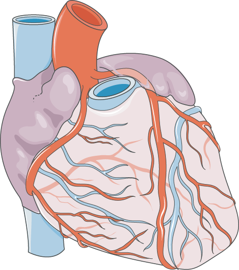

掃描分享此工具
國立臺灣大學醫學院附設醫院新竹臺大分院 心血管中心．心導管室
National Taiwan University Hospital, Hsin-Chu Branch
National Taiwan University Hospital, Hsin-Chu Branch
醫病共享決策
支架，還是開刀繞道手術？
Shared Decision-Making Aid — Stent (PCI) vs Bypass (CABG)
for Triple-Vessel / Left-Main Coronary Artery Disease
for Triple-Vessel / Left-Main Coronary Artery Disease
新竹臺大分院 心血管中心 關心您
請與您的心臟內科或心臟外科主治醫師討論最適合的治療方式 · 2020 年第一版／2026 年重新編修
請與您的心臟內科或心臟外科主治醫師討論最適合的治療方式 · 2020 年第一版／2026 年重新編修
這份工具能幫您什麼？
當心臟的冠狀動脈有三條（含）以上嚴重狹窄，或左主幹狹窄時，常會面臨兩種血流重建方式的選擇——心導管支架（PCI）與外科繞道手術（CABG）。兩者各有優缺點，沒有絕對的好壞，只有適不適合您。這份工具帶您一步步認識兩種治療、比較差異，並釐清自己的需求與在意的事，幫助您與醫療團隊一起做出最適合的決定。

第 1 章
認識冠狀動脈與診斷
心臟的三條冠狀動脈、如何發現血管狹窄、什麼是「狹窄超過 70%」
第 2 章為什麼會有兩種選擇？
嚴重多條血管病變的處置原則，以及為什麼「持續藥物控制」是共同的基礎
第 3 章心導管支架（PCI）
內科心導管支架置放的原理、過程與術前術後
第 4 章外科繞道手術（CABG）
取自身血管繞過阻塞處、重建血流的外科手術
步驟一兩種治療的比較
麻醉、傷口、住院天數、風險、長期成效與費用的逐項對照，以及各自的優缺點
步驟二釐清我的價值與偏好
用兩份簡短量表，想一想自己最在意的是什麼（可線上勾選）
步驟三我的初步傾向
把在意的事彙整起來，看看自己目前比較傾向哪一種（可線上勾選）
步驟四我準備好做決定了嗎？
決策準備度自我檢核，以及如何聯絡心導管室團隊（可線上勾選）
參考與致謝參考文獻與製作團隊
PRECOMBAT 試驗等實證依據與製作團隊名單
本工具僅供衛教與溝通輔助之用，不能取代醫師依您個別病情所做的專業評估與建議。實際治療方式請與您的醫療團隊討論後決定。